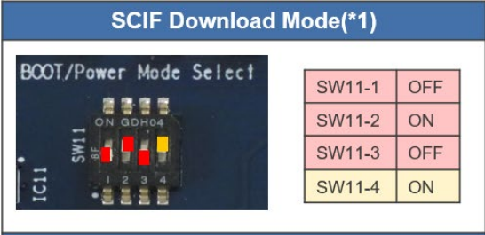
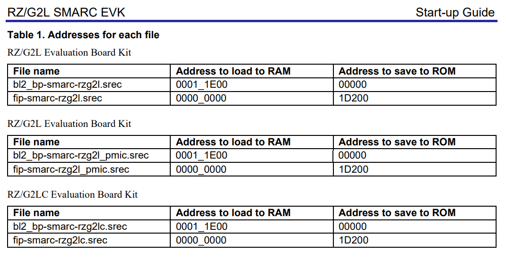
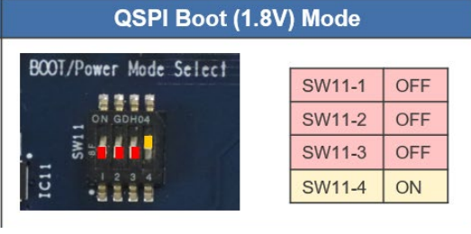
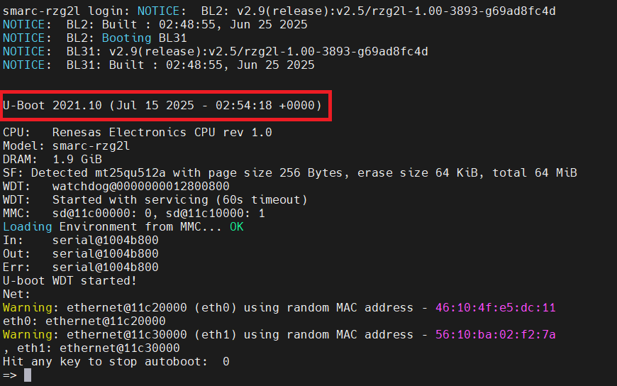

Flashing the bootloader
The bootloader (BL2 + FIP with TF-A and U-Boot) lives in the SPI flash of the board. To write it, the board is put into SCIF download mode, a small program called the Flash Writer is sent to RAM over the serial console, and the Flash Writer then writes the BL2 and FIP files into flash with the XLS2 command.
The procedure is the same on every board. Only the file names, the flash addresses and the boot mode switches change. Pick your board in the tabs below; the choice is remembered on every page.
Inputs
All files come from the Yocto deploy directory (build/tmp/deploy/images/<machine>/).
There are 2 versions of the RZ/G2L SMARC EVK: PMIC and non-PMIC.
| File | non-PMIC | PMIC |
|---|---|---|
| Flash Writer | Flash_Writer_SCIF_RZG2L_SMARC_DDR4_2GB.mot |
Flash_Writer_SCIF_RZG2L_SMARC_PMIC_DDR4_2GB_1PCS.mot |
| BL2 | bl2_bp-smarc-rzg2l.srec |
bl2_bp-smarc-rzg2l_pmic.srec |
| FIP | fip-smarc-rzg2l.srec |
fip-smarc-rzg2l_pmic.srec |
| File | Name |
|---|---|
| Flash Writer | FlashWriter-smarc-rzg3s.mot |
| BL2 | bl2_bp_spi-smarc-rzg3s.srec |
| FIP | fip-smarc-rzg3s.srec |
| File | Name |
|---|---|
| Flash Writer | Flash_Writer_SCIF_RZV2N_DEV_LPDDR4X.mot |
| BL2 | bl2_bp_spi-rzv2n-evk.srec |
| FIP | fip-rzv2n-evk.srec |
Flash addresses
Values to type at the XLS2 prompts (hex, without the H' prefix):
| Board | BL2 Program Top | BL2 Save Address | FIP Program Top | FIP Save Address |
|---|---|---|---|---|
| RZ/G2L | 11E00 |
00000 |
00000 |
1D200 |
| RZ/G3S | A1E00 |
00000 |
00000 |
60000 |
| RZ/V2N | 8101E00 |
00000 |
00000 |
60000 |
Note
These addresses depend on the BSP version. If writing succeeds but the board does not boot, check the Start-up Guide that matches your BSP (see Boards).
Serial console
Connect the debug serial port of the board to the host and open a terminal (Tera Term, minicom, picocom, ...) with 115200 bps, 8N1, no flow control.
Boot mode: SCIF download
Power off the board and set the boot mode switches to SCIF download:
Configure SW11 as below:

Set SW_MODE (carrier board) as below:
| SW_MODE | 1 | 2 | 3 | 4 |
|---|---|---|---|---|
| Setting | OFF | ON | OFF | ON |
Set DSW1 to Boot mode 3 (SCIF download). See the figure in the RZ/V AI SDK guide for the switch positions.
Power on (or press RESET). The terminal shows:
SCIF Download mode
(C) Renesas Electronics Corp.
-- Load Program to SystemRAM ---------------
please send !
Flashing
1. Flash Writer
Send the Flash Writer .mot file from the terminal (Tera Term: File → Send file). When it is loaded, the > prompt appears.
2. BL2
>XLS2
===== Qspi writing of RZ/G2 Board Command =============
Load Program to Spiflash
Writes to any of SPI address.
Micron : MT25QU512
Program Top Address & Qspi Save Address
===== Please Input Program Top Address ============
Please Input : H'11E00
===== Please Input Qspi Save Address ===
Please Input : H'00000
Work RAM(H'50000000-H'53FFFFFF) Clear....
please send ! ('.' & CR stop load)
Enter the BL2 addresses of your board from the table above, then send the BL2 .srec file. If the Flash Writer asks SPI Data Clear(H'FF) Check ... Clear OK?(y/n), answer y.
3. FIP
>XLS2
===== Qspi writing of RZ/G2 Board Command =============
Load Program to Spiflash
Writes to any of SPI address.
Micron : MT25QU512
Program Top Address & Qspi Save Address
===== Please Input Program Top Address ============
Please Input : H'00000
===== Please Input Qspi Save Address ===
Please Input : H'1D200
Work RAM(H'50000000-H'53FFFFFF) Clear....
please send ! ('.' & CR stop load)
Enter the FIP addresses of your board, then send the FIP .srec file.
The logs above are from the RZ/G2L. The messages differ slightly on other boards, but the prompts are the same.

Tip
The RZ/G3S Flash Writer supports a SUP command to raise the transfer rate from 115200 to 921600 bps before XLS2. Change the terminal speed to match, and change it back to 115200 bps when writing is done.
No board-specific notes.
Boot
When both files are written, power off, set the switches back to normal boot and power on again.
Set SW11 to normal boot:

Set SW_MODE to SPI boot:
| SW_MODE | 1 | 2 | 3 | 4 |
|---|---|---|---|---|
| Setting | OFF | OFF | OFF | ON |
Set DSW1 to Boot mode 2 (xSPI boot).
You should see U-Boot start, for example on the RZ/G2L:
